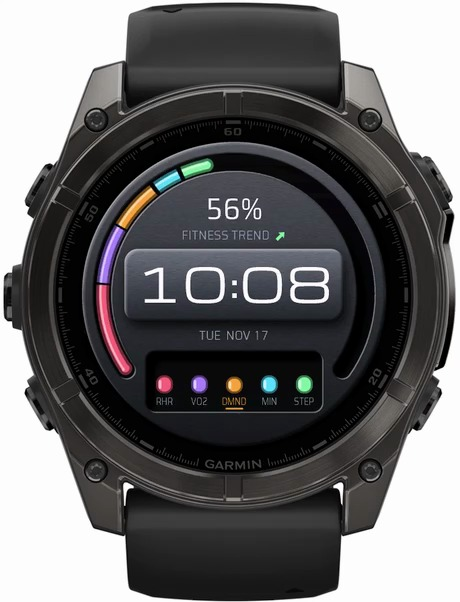

Steady
Fitness without the guilt.
One ring scored on a rolling 7-day average, so a rest day does not read as a failure.
A watch face is the thing you look at most, so it should be your biggest fan, not a critic. FaceGrabs publishes four faces for round AMOLED and color-screen Garmin watches. Each has its own personality and is built around one problem it is meant to solve.
Works on round AMOLED and color-screen Garmin watches: fenix 8/9, epix 2, Forerunner 165/265/570/965/970, Venu 3/4, vivoactive 5/6.
01 Faces
Four faces. Four different ideas about what a watch face should do.
Fitness without the guilt.
One ring scored on a rolling 7-day average, so a rest day does not read as a failure.

Your training. Your numbers. Your rules.
One readiness score built from five metrics you choose and weight, with a view of what is driving it.
02 Family
Built to look earned.
Weathered steel, rust and a warm orange glow. A watch that looks like equipment, not another digital screen.
Big digital time, your way.
Huge, clean time you can read at a glance, then set up exactly your way.
Every face has a listing where you can try it for two days first.
A companion Output widget is planned. It shows today's readiness score at a glance from the Garmin widget glance on the watch.
FaceGrabs builds from what wearers ask for. If a face is missing something, or you have an idea for a new one, tell us. Tap the button and an email opens with a few prompts to fill in.